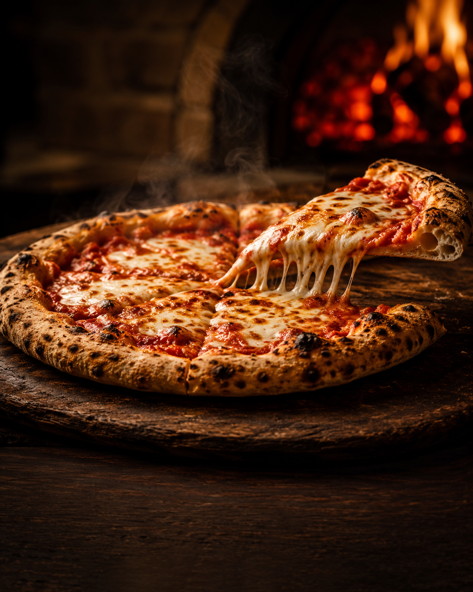
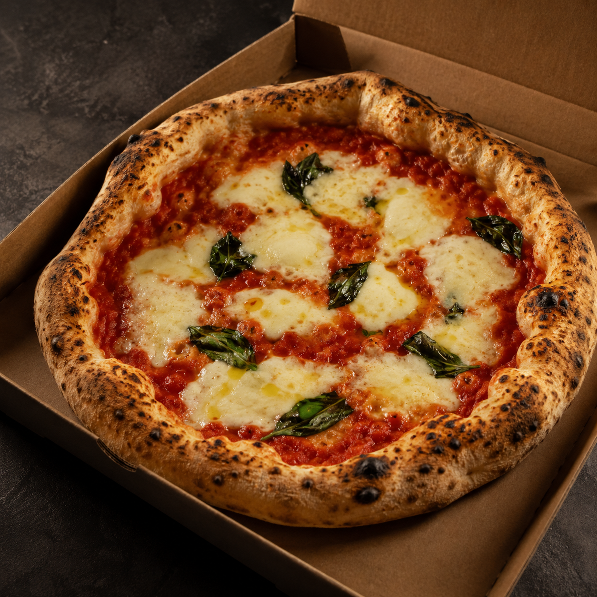
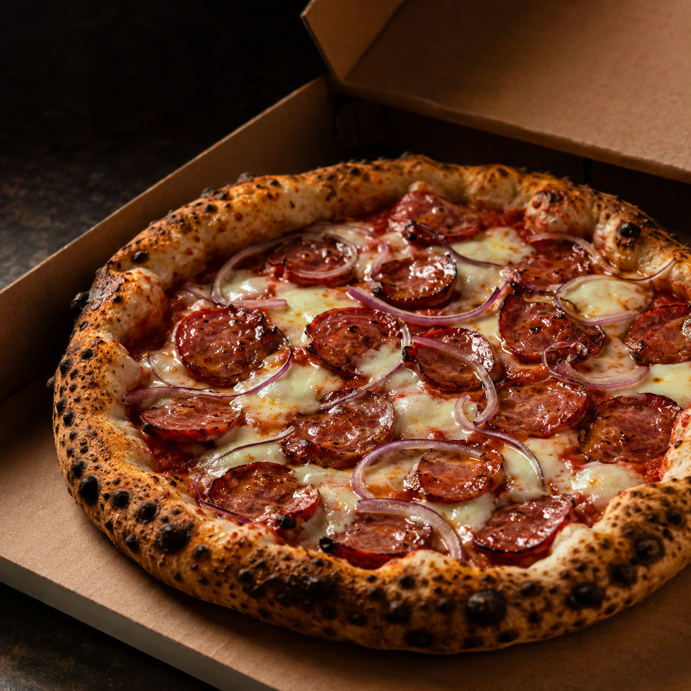
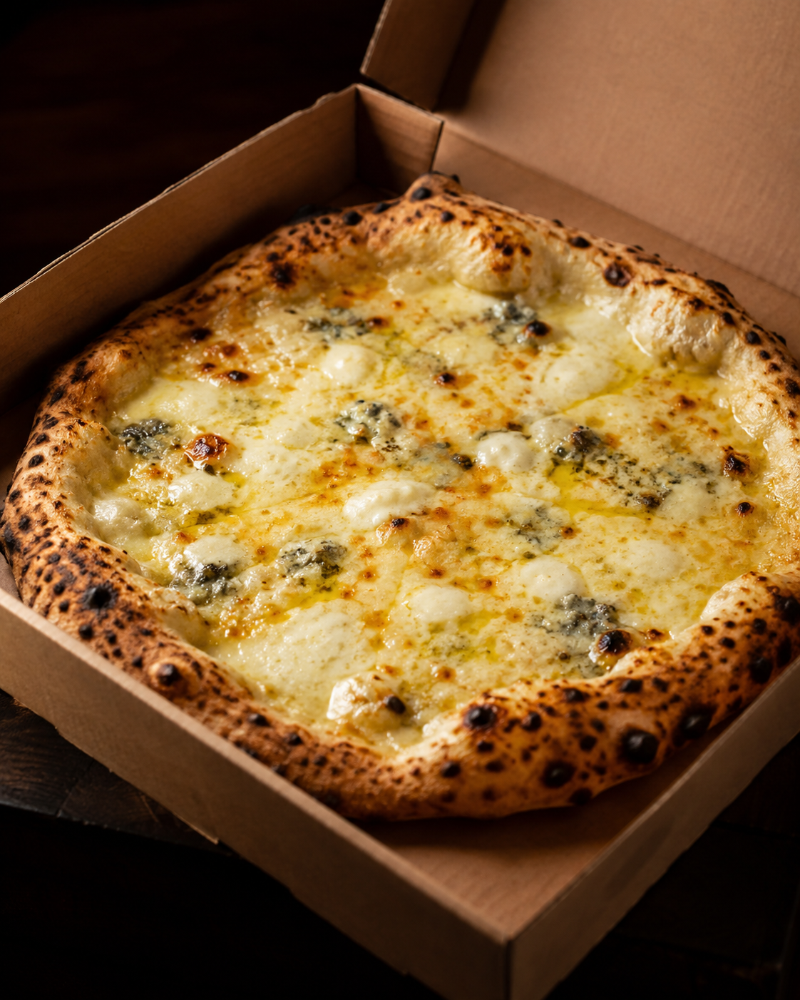
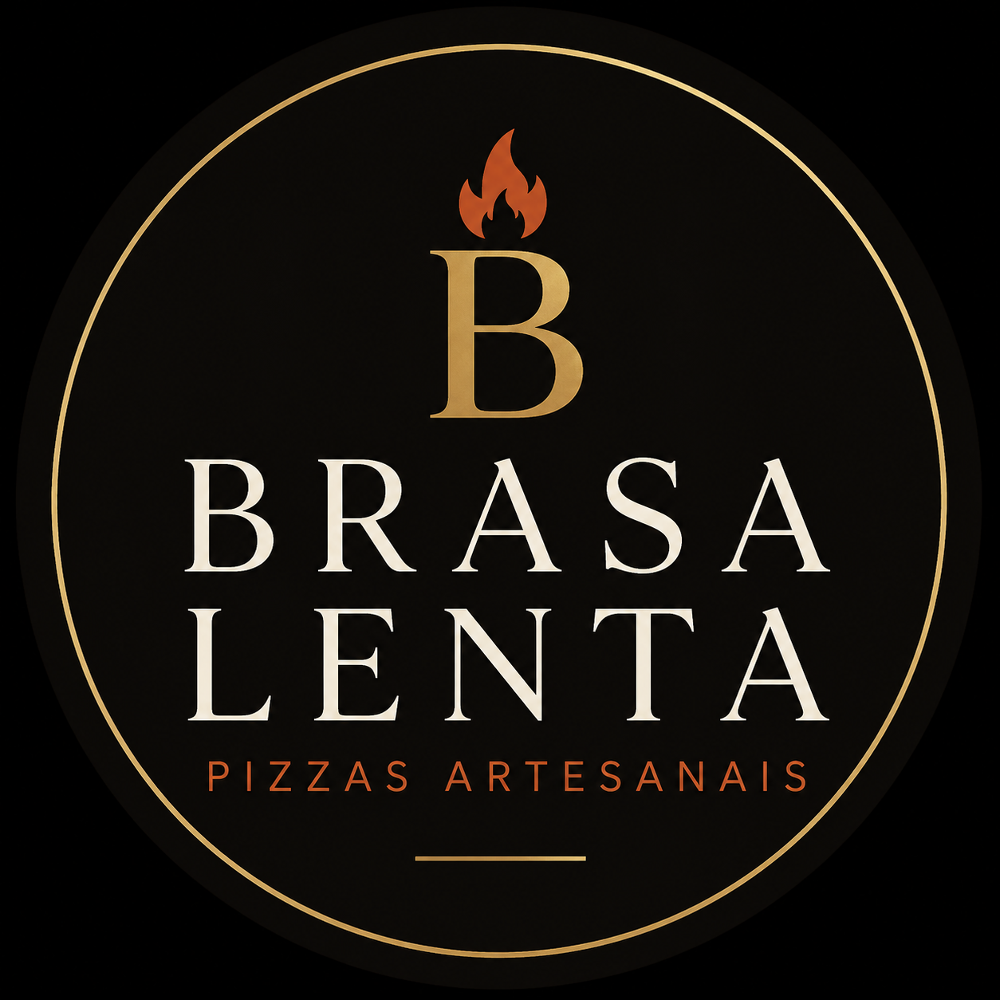

01
48 horas
Massa de longa fermentação para uma textura leve, aerada e cheia de personalidade.
Não fazemos massa apenas para vender pizza. Fazemos para que alguém tenha uma noite melhor.

NOSSA ESSÊNCIA
Para a Brasa Lenta, pizza é o elo entre pessoas. É a mesa que se abre, a conversa que demora, o cheiro que vira lembrança e aquele momento em que a casa parece mais quente.
É por isso que fazemos cada etapa sem atalhos. Porque algumas coisas só ficam boas quando recebem tempo.
O que você sente na mordida começa muito antes do forno.
Massa de longa fermentação para uma textura leve, aerada e cheia de personalidade.
Matéria-prima escolhida para sustentar o estilo de massa que define a experiência Brasa Lenta.
Molho de tomate com sabor vivo, equilibrado e presente sem esconder o restante da pizza.
Calor alto, borda marcada e o cuidado de entregar cada pizza no ponto que a Brasa acredita.
Existem cheiros que viram lembrança para sempre.
BRASA LENTA · PIZZAS ARTESANAIS
Uma seleção que apresenta o jeito Brasa Lenta de fazer pizza: massa protagonista, ingredientes reconhecíveis e equilíbrio em cada cobertura.

Tomate San Marzano, muçarela, manjericão fresco e azeite.

Calabresa tostada, cebola roxa, queijo derretido e borda bem marcada.

Muçarela, gorgonzola, parmesão e provolone em uma combinação cremosa e intensa.

Uma linha artesanal pré-assada, pensada para levar a identidade da Brasa Lenta para outros momentos da rotina — com praticidade, mas sem abrir mão do cuidado no processo.
A Brasa Lenta também desenvolve experiências e formatos para pontos parceiros, encontros especiais e negócios que compartilham a mesma atenção à qualidade.
Uma forma de colocar a Brasa mais perto de quem já procura conveniência com qualidade artesanal.
Pizza como parte da atmosfera: fogo, preparo e serviço construindo uma experiência memorável.
Projetos de harmonização, kits e ativações criados de forma coerente com a identidade de cada parceiro.
Acompanhe as fornadas, novidades e os bastidores da Brasa Lenta.
@brasalentapizzaria